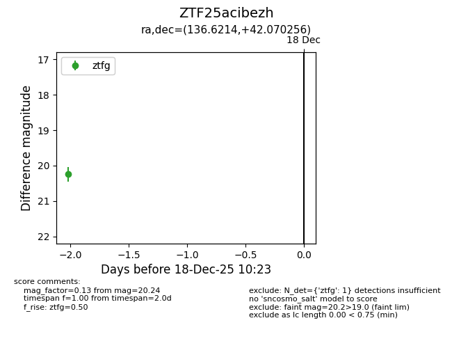
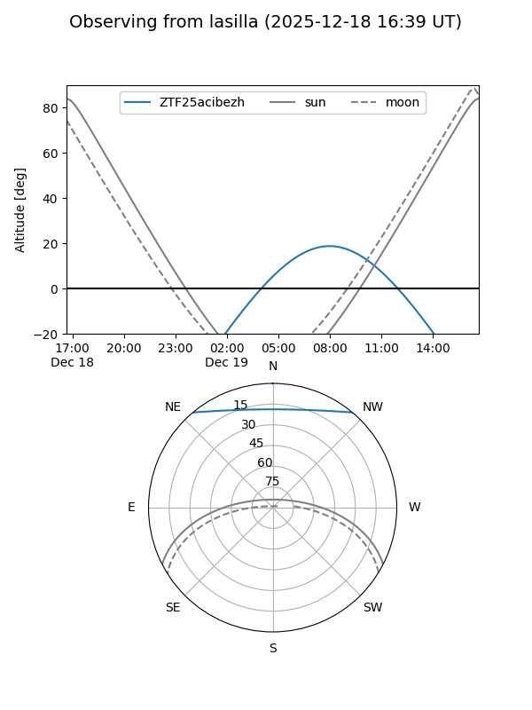
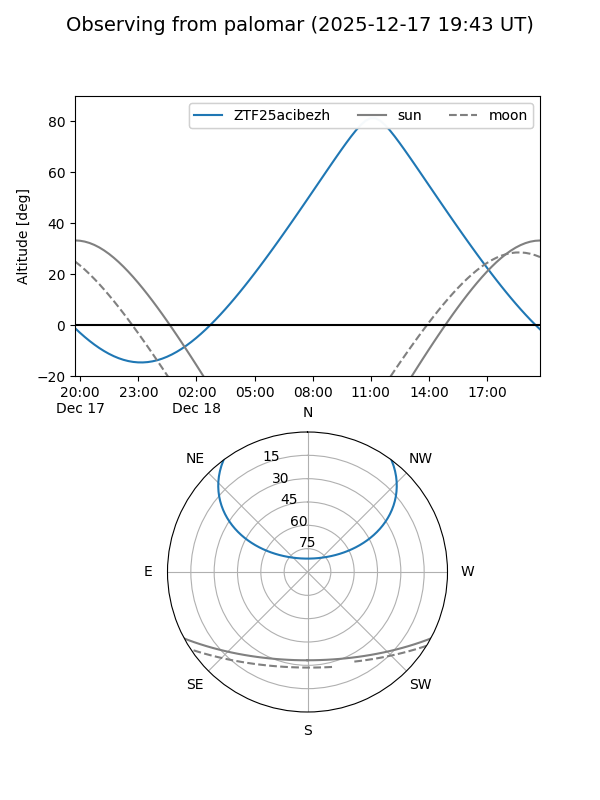

ZTF25acibezh
Target ZTF25acibezh at 2025-12-18 11:18
Aliases and brokers:
FINK: fink-portal.org/ZTF25acibezh
Lasair: lasair-ztf.lsst.ac.uk/objects/ZTF25acibezh
ALeRCE: alerce.online/object/ZTF25acibezh
alt names
ZTF25acibezh (ztf,fink_ztf)
Coordinates:
equatorial (ra, dec) = 136.6214,+42.07026
equatorial (HMS+DMS) = 09:06:29.15,+42:04:12.92
galactic (l, b) = (179.4484,+42.27466)
Photometry
last ztfg=20.24
1 ztfg detections
Lightcurve

Visibility


Additional plots